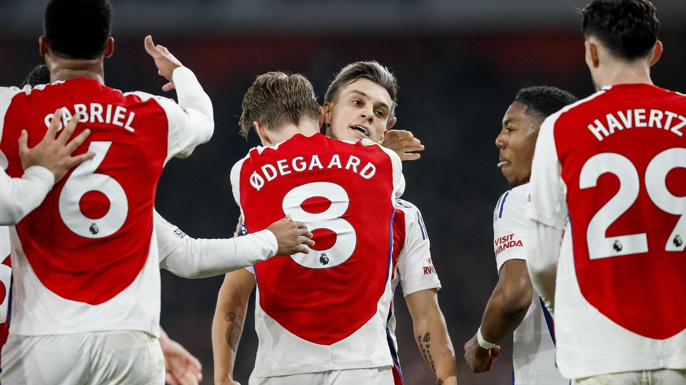

3 - 1

Data: 10 Maggio 2025
Stadio: Emirates Stadium, Londra
Competizione: Premier League - Giornata 36
Marcatori
- ⚽ Martinelli (12’)
- ⚽ Saka (39’)
- ⚽ Ødegaard (77’)
- ⚽ Jackson (Chelsea, 84’)
Analisi della partita
L’Arsenal domina gran parte dell’incontro grazie a un pressing alto e a una grande intensità. Martinelli apre le marcature con un gran tiro da fuori, seguito da un rigore trasformato da Saka. Nella ripresa, i Gunners continuano a controllare e trovano il terzo gol con un sinistro preciso di Ødegaard. Il Chelsea accorcia solo nel finale con Jackson, ma la partita è già decisa.
Prestazione eccellente di Declan Rice a centrocampo e difesa solida guidata da Saliba. Con questa vittoria, l'Arsenal resta in corsa per il titolo.
